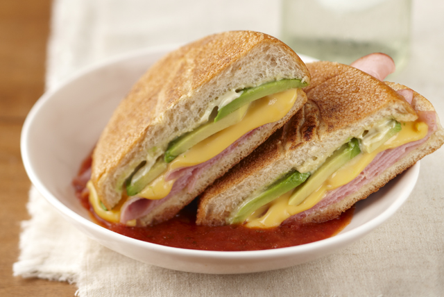

Torta de Jamón

La torta de jamon es un clasico de la comida mexicana. Desde el chavo del
8 hasta la persona más fresa disfruta mucho de este platillo. Simple,
facil de hacer y delicioso.
Ingredientes
-
1 bolillo
- 2 rebanadas de jamón de pavo Prosazaón
- 50 gr de queso oaxaca
- 1/4 de tomate
- 1/4 de cebolla
- Mayonesa al gusto
- 1/2 aguacate
- 2 hojas de lechuga orejona
- Mantequilla al gusto
- Chile en vinagre
Pasos
-
Corta tu bolillo por la mitad, quítale el migajón y úntale mantequilla
por ambos lados.
-
Coloca en un sartén el pan y dale vuelta por ambos lados para que la
mantequilla se absorba.
-
En el mismo sartén, agregamos más mantequilla y agregamos una rebanada
de jamón con el queso rallado.
- Voltéalo de lado hasta que el queso se derrita.
- Corta en rebanadas el aguacate, el tomate y la cebolla.
-
Unta mayonesa en ambas partes internas del bolillo, agrega la rebanada
de jamón con queso derretido, cebolla, tomate y aguacate.
-
Agrega la otra rebanada de jamón, la lechuga, el chile en vinagre y
cierra tu torta.